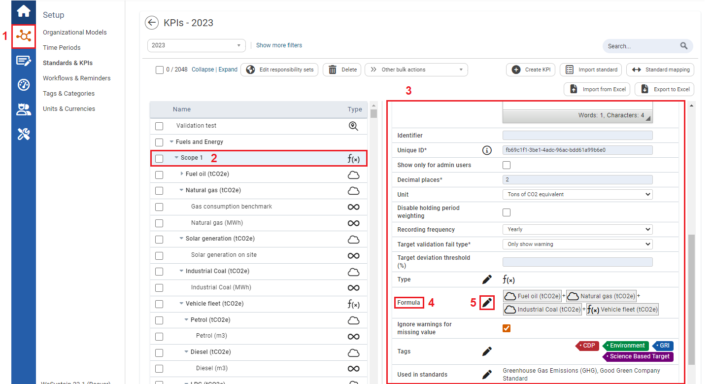
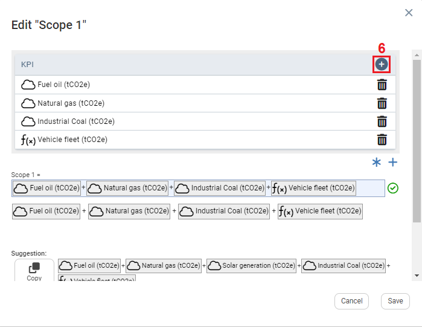
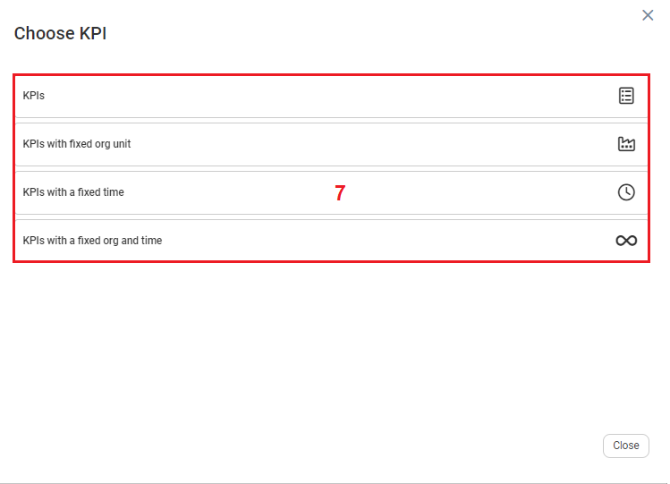
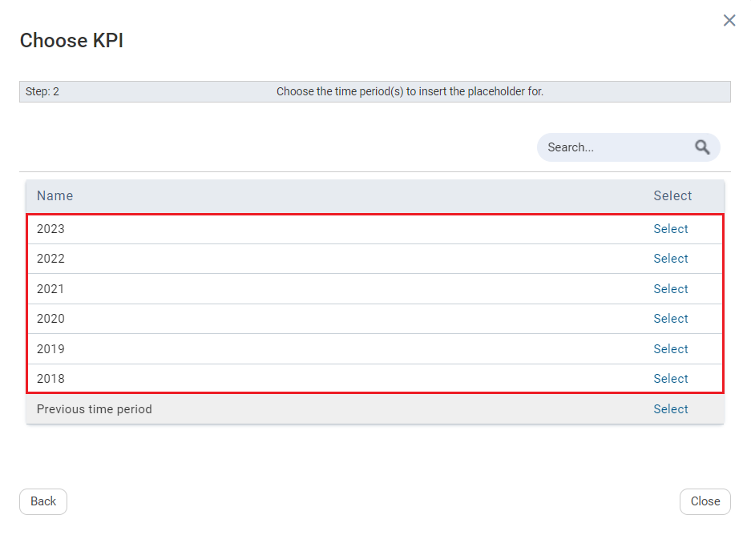
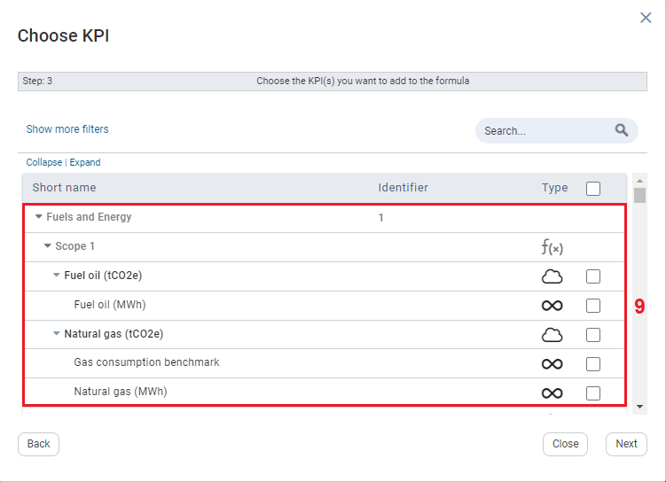
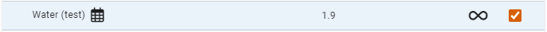
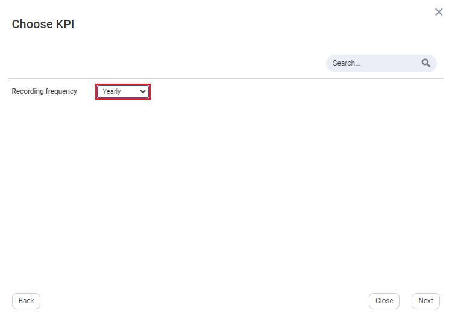
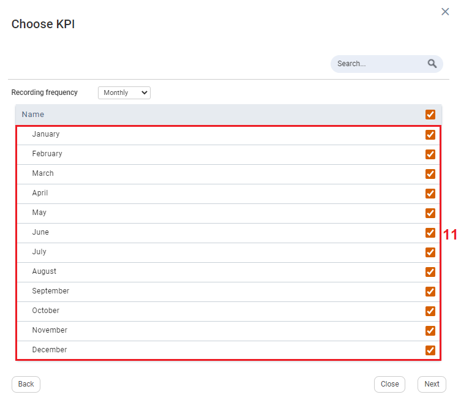
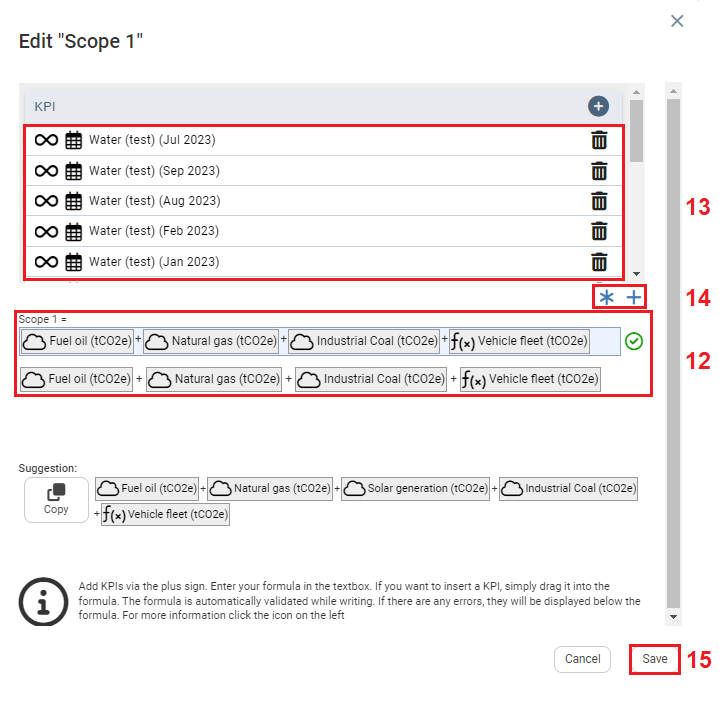

Users can input either yearly or sub yearly KPI into formulas, based on calculations one would like to view.
To input yearly and sub yearly KPIs into formulas

| 1 | On the left navigation panel, click Setup, and then click Standards & KPIs. |
| 2 | Select a KPI. |
| 3 | Information on the KPI will display to the right. |
| 4 | On the Settings tab, scroll to Formula. |
| 5 | To edit the Formula, click the pencil icon. |

| 6 | To add yearly or sub yearly KPIs to a formula click the plus icon. |

| 7 | Click one of the fields. Note: Depending on the selected field the pop-up windows can slightly differ, the one that was selected for this example was KPI with a fixed time. |

| 8 | Select a reporting year. |

| 9 | Select the KPIs you want to include in the formula.  Note: For sub yearly KPIs the KPIs with the calendar icon need to be selected. |

| 10 | Select the Recording Frequency, by clicking the Recording Frequency dropdown textbox. |

| 11 | Depending on the recording frequency selection select the year, half-years, quarter-years, or months you want to include. |

| 12 | This is the formula row. |
| 13 | To add the formula content to the formula row, Click and drag the formula content to the formula row. |
| 14 | You can also use the plus and multiply signs to add the formula content to the formula row. |
| 15 | Click Save. |